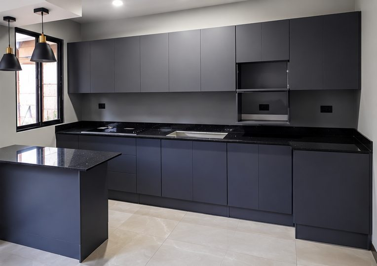
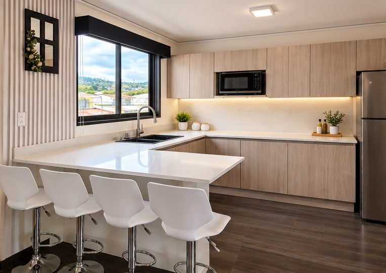
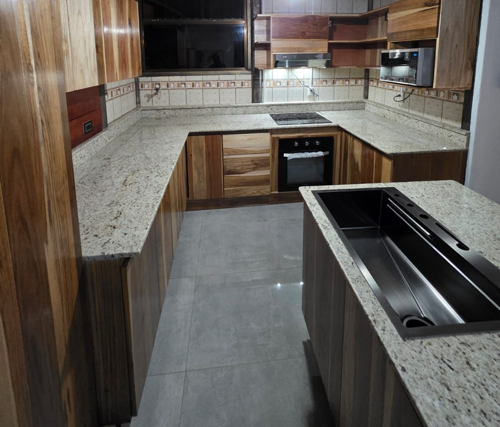
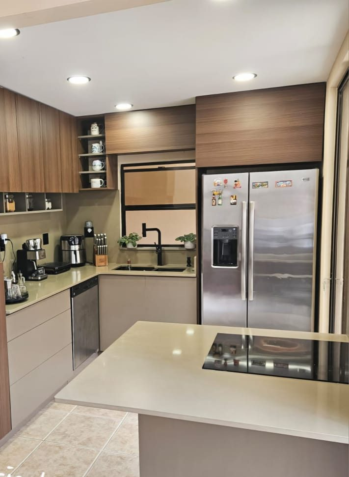
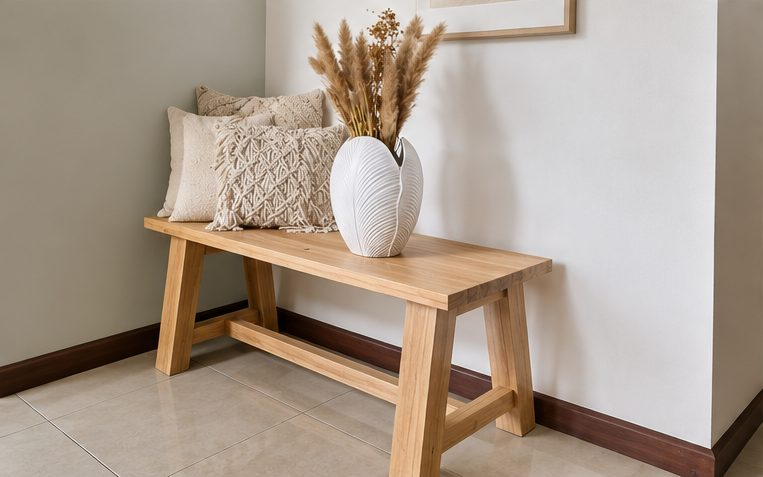
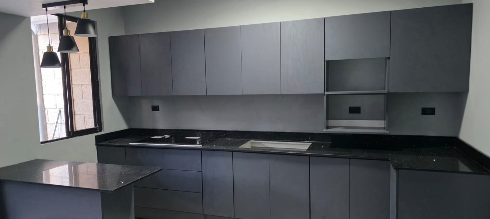
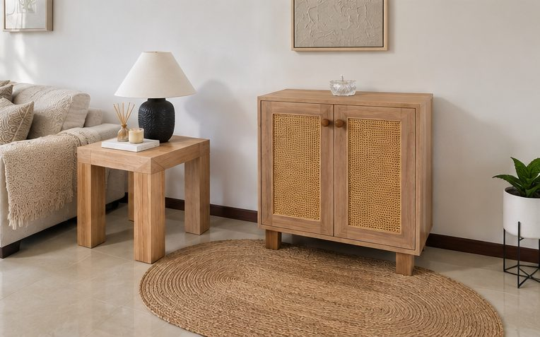
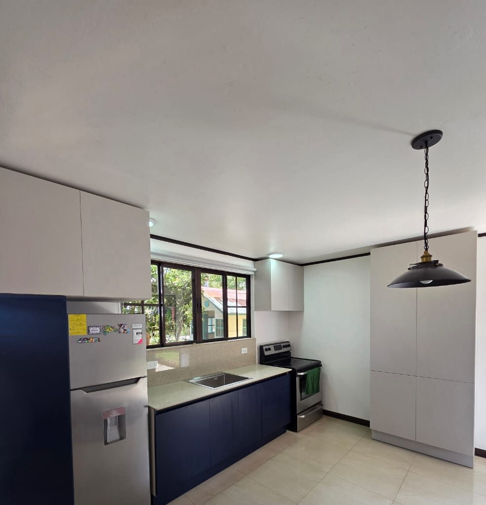
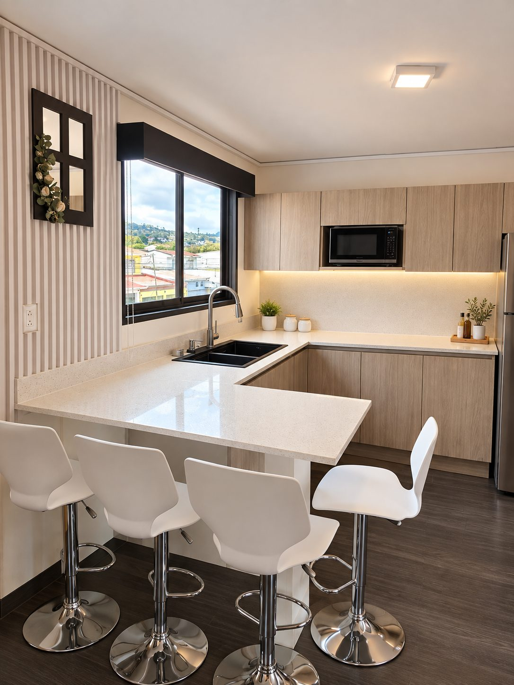

Mueblería Tencio: cocinas y muebles a la medida
Un mueble bien hecho se nota en lo que no se ve: en cómo cierra cada puerta, en cómo aguanta el uso de todos los días y en que cada centímetro se pensó para tu espacio.
Cocinas
a la medida
Diseñamos y fabricamos cocinas, closets y mobiliario para cada espacio. Antes de cortar la primera pieza te entregamos planos y una cotización detallada con materiales, acabados y tiempo de entrega.
Cocina con barra
Barra en L con sobre blanco, gabinetes en tono roble y luz bajo alacena.
Cotizar una así


Catálogo
Cocinas y piezas entregadas
Cada proyecto se diseña según el espacio, el estilo y el presupuesto de quien lo pide. Estos son algunos de los que ya salieron del taller.





Sobre Tencio
Somos un taller de cocinas y mobiliario a la medida. No vendemos muebles de catálogo: cada proyecto se cotiza según tus medidas, los materiales que elijas y los acabados que necesite tu espacio.
Así llevamos un proyecto de la idea a tu casa:
- Nos contás tu proyecto por WhatsApp o por el formulario.
- Visitamos y tomamos medidas en el sitio.
- Te entregamos diseño y cotización detallada.
- Fabricamos cada pieza en el taller.
- Instalamos y entregamos listo para usar.
Contacto
Contanos qué necesitás y te respondemos con una propuesta clara. La visita para medir y la cotización inicial no tienen costo.
Dirección
Pendiente: dirección del taller
Contacto
Pendiente: número de WhatsApp
Pendiente: correo
Horarios
Pendiente: días y horas de atención
Mapa del taller